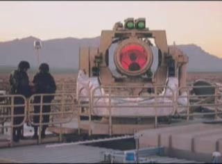
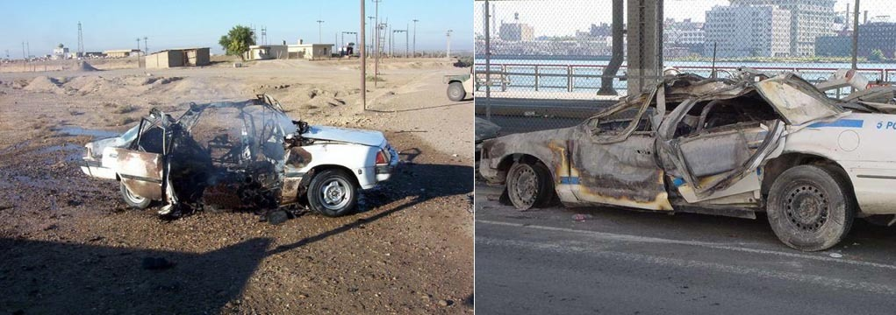

| Bottom | homepage | Why Indeed | Billiard Balls |
|
|
The Star Wars Beam Weapons
and
Star Wars Directed-Energy Weapons (DEW)
(A focus of the Star Wars Program)
by
Dr. Judy Wood and Dr. Morgan Reynolds
(originally posted: October 17, 2006)
Page 7: The Conclusions
|
At the time this article was being developed, many people expressed disbelief that energy weapons existed outside of science fiction until they were reminded of the Star Wars Program, also known as the Strategic Defense Initiative (SDI)*. The name of this article was chosen as a reminder that energy weapons do exist and have been developed over 100 years. Most of this technology is classified information. It can also be assumed that such technology exists in multiple countries. The purpose of this article was to begin to identify the evidence of what happened on 9/11/01 that must be accounted for. In doing so, the evidence ruled out a Kinetic Energy Device (bombs, missiles, etc.) as the method of destruction as well as a gravity-driven "collapse."
*SDI was created by U.S. President Ronald Reagan on March 23, 1983.1 It is thought that SDI may have been first dubbed "Star Wars" by opponent Dr. Carol Rosin, a consultant and former spokeswoman for Wernher von Braun. However, Missile Defense Agency (MDA) historians attribute the term to a Washington Post article published March 24, 1983, the day after the Star Wars speech, which quoted Democratic Senator Ted Kennedy describing the proposal as "reckless Star Wars schemes."2 Before it was named the "Star Wars Program (SDI) in 1983, it was the Advanced Space Programs Development.3
12/12/10 -- Dr. Judy Wood
|
| 1Strategic Defense Initiative, Wikipedia, 2Sharon Watkins Lang. SMDC/ASTRAT Historical Office. "Where Do We Get Star Wars?", The Eagle. March 2007. 3 Robert M. Bowman, former Director of Advanced Space Programs Development for the U.S. Air Force in the Ford and Carter administrations. |
This page last updated, April 12, 2007
|
Shortcuts: Jump to: XV. Does Such Technology Exist? Jump to: LASER development Jump to: microwaving Jump to: antimatter weapons Jump to: testing Jump to: video Jump to: no Collapse video Jump to: Dr. Douglas J. Beason Jump to: XVI. Conclusions Jump to: beam weapons and directed-energy weapons Jump to: XVII. Acknowledgements |
Audio:
29 November 2006, Judy Wood narrates these pages web pages on |
XV. Does Such Technology Exist?
| Figure 96(a). microwave oven First discovered 1945 by Percy Spencer First Radarange 1947 by Raytheon. |
Figure 96(b). Laser pointers are so common that they have become key chain ornaments *First demonstrated in mid 1950s (1951, 1951, 1954, 1957, 1958). |
Figure 96(b). Laser pointers are available in different wavelengths |
*The "LASER" was in concept form as early as 1905 and 1917, but came to the "proof of concept stage" in 1953 with microwave energy but not with visible light until 1957. So, it was only fair to consider the range from 1953-1957 as the true "proof of concept" time. The concept was around since 1917, but not proven. You can say that it was technically proven in 1953, but truly proven by November 1957 by Gordon Gould, graduate student of Dr. Charles Townes. It was first demonstrated in mid 1950s (1951, 1951, 1954, 1957, 1958).
 |
|
| Figure 97(a). This does not look like a prototype. (screen capture from video below): |
Figure 97(b). (screen capture from video below): |
|
|
||||
| Figure 98. Iraq - laser weapons documentary |
|||||
| References related to above video: Microwaving Iraq http://www.willthomas.net/Convergence/Weekly/Microwaving_Iraq.htm http://www.willthomas.net/Convergence/Weekly/Microwave_Weapons.htm |
downloadable segments: 03_Myers-Rumsfeld_DEW.wmv (6.6 Mb) 03_Myers-Rumsfeld_DEW.mov (17.5 Mb) |
||||
The statements by Secretary of Defense Donald Rumsfeld and General Myers excerpted from the aboved archived press conference from 2003 are especially revealing: JOURNALIST: Mr. Secretary, can I ask you a question about some of the technology that you're developing to fight the war on terrorists, specifically directed energy and high-powered microwave technology? When do you envision that you can weaponize that type of technology? DONALD RUMSFELD (appearing noticeably uncomfortable with the question): In the normal order of things, when you invest in research and development and begin a developmental project, you don't have any intention or expectations that one would use it. On the other hand, the real world intervenes from time to time, and you reach in there and take something out that is still in a developmental stage, and you might use it. JOURNALIST: But you sound like you're willing to experiment with it. GENERAL MYERS: Yeah, I think that's the point. And I think we have from the beginning of this conflict… I think General Franks [commander of U.S. forces in Iraq] has been very open to looking at new things, if there are new things available, and has been willing to put them into the fight, even before they've been fully wrung out… And we will continue to do that. Thanks to a reader for this transcript. |
|||||
|
Toasted Cars
|
|
 One is in Iraq and one is on FDR Drive |
| Additional information of interest.
Video: http://www.rainews24.it/ran24/inchieste/video/guerre_stellari_english.wmv |
| Excerpt from antimatter weapons. "These two characteristics are still valid today and entirely justify the interest in antimatter. The first, is that the release of usable energy per unit mass is greater in annihilation than in any other nuclear reaction. One proton-antiproton annihilation releases 300 times more energy than a fission or fusion reaction. The second, is that when antimatter is brought in the proximity of matter, annihilation starts by itself, without the need of a critical mass as in fission, and without the ignition energy needed in fusion." |
| Excerpts from the following article Air Force pursuing antimatter weapons Program was touted publicly, then came official gag order Keay Davidson, Chronicle Science Writer Monday, October 4, 2004 "The energy from colliding positrons and antielectrons "is 10 billion times ... that of high explosive," Edwards explained in his March speech. Moreover, 1 gram of antimatter, about 1/25th of an ounce, would equal "23 space shuttle fuel tanks of energy." Thus "positron energy conversion," as he called it, would be a "revolutionary energy source" of interest to those who wage war. It almost defies belief, the amount of explosive force available in a speck of antimatter -- even a speck that is too small to see. For example: One millionth of a gram of positrons contain as much energy as 37.8 kilograms (83 pounds) of TNT, according to Edwards' March speech. A simple calculation, then, shows that about 50-millionths of a gram could generate a blast equal to the explosion (roughly 4,000 pounds of TNT, according to the FBI) at the Alfred P. Murrah Federal Building in Oklahoma City in 1995. " "I think," he said, "we need to get off this planet, because I'm afraid we're going to destroy it." |
|
|
||||||||||||||||||||||||||||||||||
| Figure 99. Videos of shootdowns using a High Energy Laser | |||||||||||||||||||||||||||||||||||
|
||
{kind=link}
{kind=link}
| Link |
For more evidence, please see the information on the page, Appendix_2.
|
This video began playing by itself so has been removed. Please use the links to view it.
|
|
32:37 URL Video
|
|
9/11 Truth: Structural Failures vs. Controlled Demolitions
|
|
This is a video response to Preview
of New 9/11 Truth Documentary "Improbable ImprobableCollapseResponse" alternate: ImprobableCollapseResponse (mov) (mpg) |
| Figure Beason. Douglas Beason (click on picture to play audio)
|
Source (9/11/01)
|
| New weapons and how they may change war subject of talk Thursday at Museum The E-Bomb: How America's New Directed-Energy Weapons Will Change the Way Future Wars Will be Fought (mp3) November 29, 2005 link DR. J. DOUGLAS BEASON, Col. (USAF, ret.), a key architect and leading expert of directed-energy research for the past twenty-six years, holds a Ph.D. in laser-technology physics. He has served at the White House, working for the President's Science Advisor in both the Clinton and Bush administrations. Today he is on the Board of Directors of the Directed Energy Professional Society, and at Los Alamos National Laboratory he is Director of Threat Reduction. Dr. Beason is the author of twelve books, including some popular fiction techno-thrillers, and over one hundred scholarly papers and other works. He is a Fellow of the prestigious American Physical Society. |
|
| Figure example. Source |
 |
| Figure 100. There are a lot of wavelengths here to pick and choose from or "mix and match" (i.e. it need not be just one frequency). |
Why did Donald Rumsfeld, in January 2001, have a premonition predicting 9/11?
| In January 2001, a commission led by Donald Rumsfeld warned of growing threats to U.S. space assets from so-called "rogue states." The commission cited the dangers of a Pearl Harbor-style attack in space. It recommended that the President be given the option of putting weapons in space to protect U.S. assets. The article noted that Rumsfeld, upon taking over as defense secretary, "put in place many of his commission's recommendations." |
| Source: FAS, other |
Here are the principal data that must be explained:
- The Twin Towers were destroyed faster than physics can explain (at free fall speed "collapse").
- They underwent mid-air pulverization and were turned to dust before they hit the ground.
- The protective bathtub was not significantly damaged by the destruction of the Twin Towers.
- The rail lines, the tunnels and most of the rail cars had only light damage.
- The WTC mall survived well, witnessed by Warner Bros. Road Runner and friends.
- The seismic impact was minimal, far too small based on our comparison with the Kingdome controlled demolition.
- The Twin Towers were destroyed from the top down, not bottom up.
- The demolition of WTC7 was whisper quiet and the seismic signal was no greater than background noise.
- The upper 80 percent, approximately, of each tower was turned into fine dust and did not crash to the earth.
- The upper 90 percent, approximately, of WTC7 was turned into fine dust and did not crash to the earth.
- File cabinet with folder dividers survived.
- Office paper was densely spread throughout lower Manhattan, unburned, often along side burning cars.
- Vertical round holes were cut into buildings 4, 5 and 6, plus a cylindrical arc into Bankers Trust and into Liberty street in front of Bankers Trust.
- All planes except top secret missions were ordered down until 10:31 a.m. (when only military flights were allowed to resume), after both towers were destroyed, and only two minutes after WTC 1 had been destroyed.
- Approximately 1,400 motor vehicles were towed away, toasted in strange ways, during the destruction of the Twin Towers.
- The order and method of destruction of each tower minimized damage to the bathtub and adjacent buildings.
- Twin Tower control without damaging neighboring buildings, in fact all seriously damaged or destroyed buildings had a WTC prefix, and no others.
- The north wing of WTC 4 was left standing, neatly sliced from the main body which virtually disappeared.
- The WTC1 and WTC2 rubble pile was far too small to account for the mass.
- The WTC7 rubble pile was too small and contained a lot of mud.
- Eyewitness testimony about toasted cars, instant disappearance of people by "unexplained" waves, a plane turning into a mid-air fireball, electrical power cut off moments before WTC 2 destruction, and the sound of explosions.
- There were many flipped cars in the neighborhood of the WTC complex near trees with full folliage.
* The possibility that a technology exists. Since invention of the microwave for cooking in 1945 and laser beam in 1955*, commercial and military development of beam technology has proceeded apace, so use of high-energy beams are likely
What theories are available to explain these phenomena?
We can identify seven theories:
- Natural causes such as earthquakes and hurricanes
- Arson
- The official theory of airplane impact, fires and weakened steel collapsing
- Conventional demolition with explosives such as RDX, dynamite, etc.
- Demolition via thermite or its variants
- Fission or fusion nukes (and clean bombs)
- Beam weapons, energy weapons, directed-energy weapons (DEW)
No one proposes that an earthquake destroyed the Twin Towers from the top down. The theory is contradicted by nearly all the data above. For example, no earthquake can toast cars in inexplicable patterns.
In fact, the data refute theories a to e–natural, arson, official, conventional and thermite demolition–in particular the intact bathtub, minimal seismic impact, and "dustification" prove nothing close to 1 million tons of material slammed down on the WTC foundation and its sub-basements. The debris stacks left where the Twin Towers once stood hardly covered the ground. The rescue dogs and workers did not climb up a tall pile but had to repel down to search for survivors. The arson and thermite theories fail to explain every data point, but all the unburned paper in particular refute any high-temperature based hypothesis.
The nuclear theory fails because an explosion powerful enough to turn most of each tower to dust would have seriously damaged the bathtub, probably flooded lower Manhattan, and spiked a high Richter reading. It violates a number of data points, including the observed top-down disintegration. And if a nuke were at the top, it could not progressively destroy lower floors and there were only a few steel beams tossed onto adjacent buildings and none above the 20th floor. Lots of aluminum cladding was tossed onto neighboring buildings’ roofs but no steel beams. How could a nuke be so selective? It could not. Nor can a nuke explain the toasted cars.
All the data are consistent with an energy weapon. For example, consider the round holes in buildings 5 and 6 and in Liberty Street. A directed-energy weapon by definition could cut into buildings, destroy material and leave discrete boundaries in the buildings. We know of no other explanation that has been offered for these peculiar holes. Similarly, some 1,400 cars were toasted in inexplicable patterns, and no alternative explanation to energy displacement has been offered.
| Beam Weapons, Energy Weapons, and Directed Energy Weapons (DEW): We have used the terms "beam-field weapons" and "directed energy weapons" to refer to unconventional weapons (exotic weapons) that are energy weapons. We broadly define DEW as Energy that is Directed and is used as a Weapon. The full range of these weapons is classified information, so we make no limits or distinction of categories within the realm of energy weapons, as doing so would imply specific knowledge of all that is available. In the following paragraph, we have listed some of the possibilities we are aware of. Our critics have accused us of insisting that beam weapons did their damage from outer space, yet we make no claim about whether the directed energy weapon operated from a space-, air-, or ground-based platform. Nor do we make any claim about what wavelength(s) was used, what the source(s) of energy was, whether it involved interference of multiple beams, whether it involved sound waves, whether it involved sonoluminescence, whether it involved antimatter weapons, whether it involved scalar weapons, whether it was HAARP (more here and here), whether it involved a nuclear process (e.g. NDEW, more info), whether it involved conventional directed energy weapons (conDEW), whether it involved improvised directed energy weapons (iDEW), nor what kind of accelerator was used, nor do we claim to know what the serial numbers of the parts that were in the weapon(s). What we do claim is that the evidence is consistent with the use of energy weapons that go well beyond the capabilities of conventional explosives and can be directed. |
In August 2006, we began looking at the bathtub which protected the WTC and it led us to look at more data. The data told us what destroyed the twin towers. The data told us that directed-energy weapons must exist. We were not aware that the US military had directed-energy weapons. After we concluded that some sort of energy weapon was used, we looked for evidence that such weapons exist and found it, as documented here. Developers and manufacturers of DEWs are listed here, along with some examples of their product line, which is available in the public domain. As Sherlock Holmes declared,
"When you have eliminated all which is impossible, then whatever remains, however improbable, must be the truth."
__________________________________________________________
The authors wish to thank a number of people for their help in solving this mystery. We especially want to thank Bill Biggart's widow, Wendy, and his good friend Chip East, for sharing with us those last photos taken by Bill Biggart along with the story about them. Somehow, I know that Bill knew just how valuable those pictures would turn out to be. Thank you Bill Biggart! And thank you Wendy and Chip for seeing that these images were made available to us.
Thanks to Spooked, for always being there and for being a rational human being. You beautifully demonstrated that it was always OK to disagree and that disagreement only meant that at least one of us was missing critical information. It has been an honor to work with you.
DEW Sponsors and Department of Defense Contractors
References
__________________________________________________________
Misc. notes to include elsewhere.
Thus, the weapon appears to have bored through the building to the ground level – but no farther. Removing a significant portion of the mass of WTC6 left a more manageable problem to remove the remainder of WTC6, which was a tricky challenge to avoid damaging the bathtub and parking garage [reference from S].
Final note:
 |
| Figure 101. But, clearly the bathtub survived. This is a view from the footprint of WTC1. Notice the parking structure that was under WTC6 survived. |
Continue to next page.
| Top | homepage | Why Indeed | Billiard Balls |
|
|
|